Logo’s
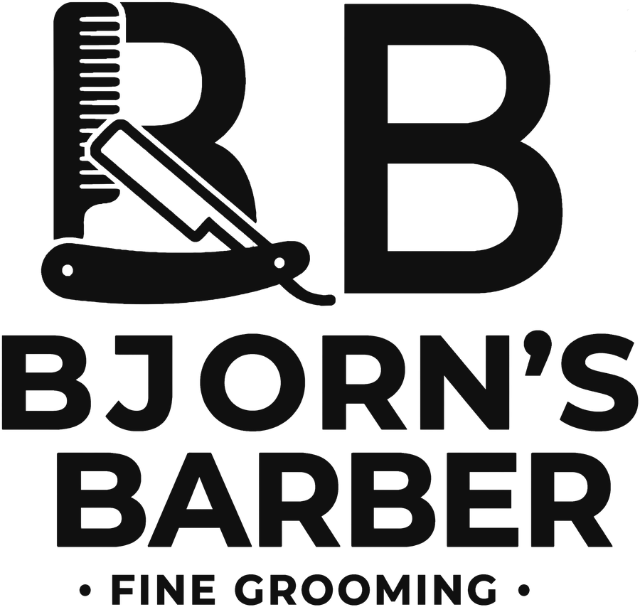
logos/bjorns-barber-logo-zwart.pnglogos/bjorns-barber-logo-wit.png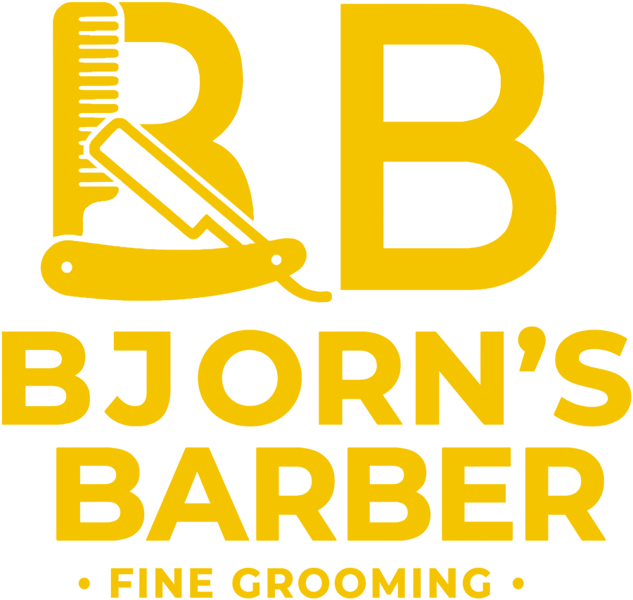
logos/bjorns-barber-logo-geel.pnglogos/bjorns-barber-logo-zwart.png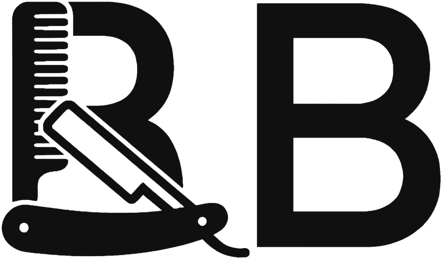
logos/bjorns-barber-beeldmerk-zwart.png
logos/bjorns-barber-beeldmerk-wit.png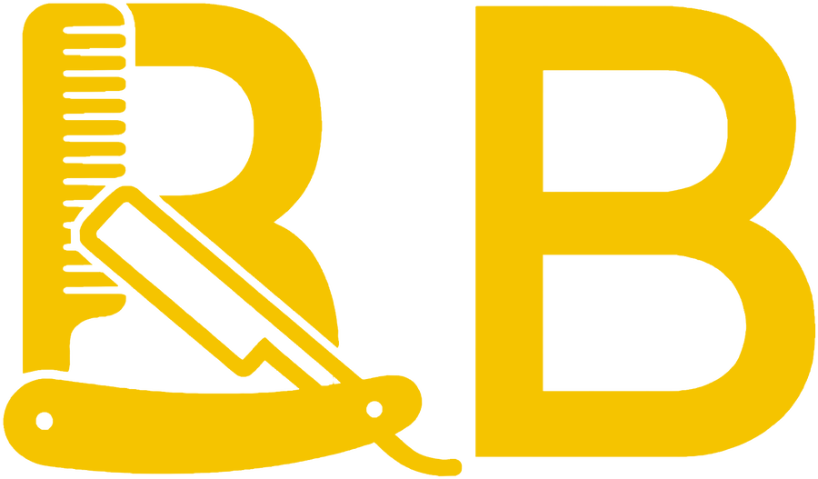
logos/bjorns-barber-beeldmerk-geel.png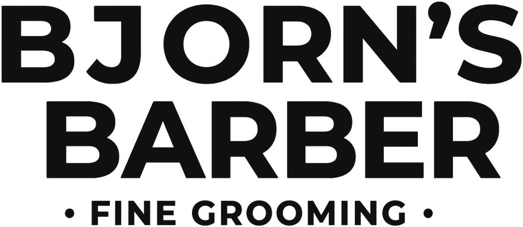
logos/bjorns-barber-naam-zwart.png
logos/bjorns-barber-naam-wit.pnglogos/bjorns-barber-woordmerk-zwart.png
logos/bjorns-barber-woordmerk-wit.png- Zwart logo op papier, wit of geel. Wit logo op zwart of op een donkere foto. Geel logo alleen op zwart.
- Nooit in een andere kleur, nooit uitrekken, nooit een schaduw of outline.
- Houd rondom het logo minstens de hoogte van de letter B vrij.
- De PNG’s zijn 900 px breed. Voor een gevel of spandoek is een vectorbestand nodig.
Kleuren
Zwart
#101010Geel
#F5C400Papier
#EFECE4Papier warm
#E4DFD4Papier licht
#F7F4ECPapier mail
#F4F1EATekst
#161616Tekst gedempt
#6B665CAntraciet
#2A2A2ADiep zwart
#070707Veel zwart en papier, geel spaarzaam: één gele knop of streep per vlak. RGB- en CMYK-waarden staan in kleuren/kleuren.txt, een palet voor Photoshop, GIMP of Affinity in kleuren/bjorns-barber.gpl.
Lettertypen
Knippen. Baard.
Lijn en vorm.
Bricolage Grotesque, gewicht 720, voor koppen
Lijn en vorm.
Haar, op jouw tempo. Je boekt een tijd op de website en krijgt meteen een bevestiging per mail. Lukt het toch niet? Stuur even een mail terug, dan zoeken we een ander moment.
Outfit, gewicht 400, voor lopende tekst. Licht (300) voor grote citaten, medium (500) voor knoppen en labels.Beide lettertypen zijn gratis (SIL Open Font License). Voor Word, Canva of de drukker: Bricolage Grotesque en Outfit op Google Fonts.
Social
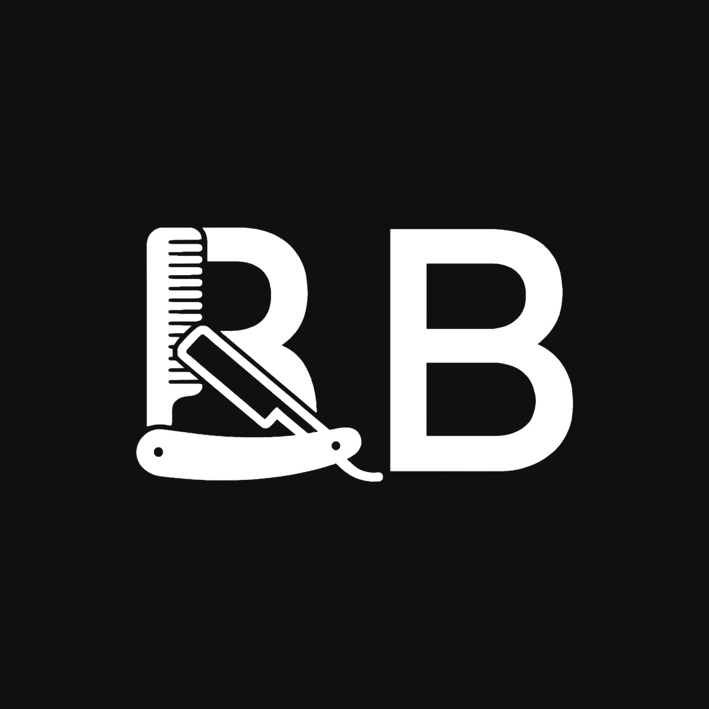
social/profielfoto-zwart.jpg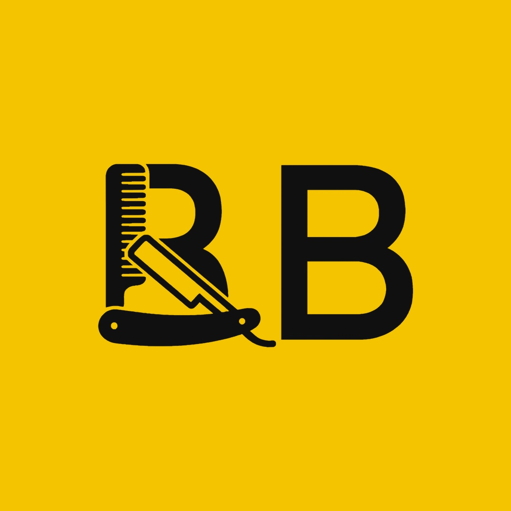
social/profielfoto-geel.jpg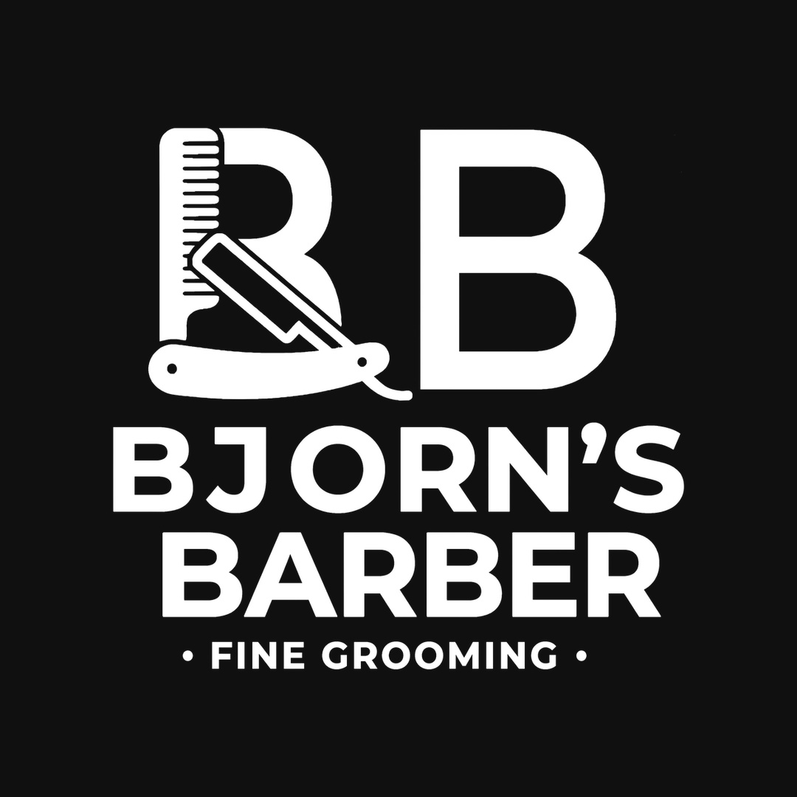
social/profielfoto-logo-zwart.jpg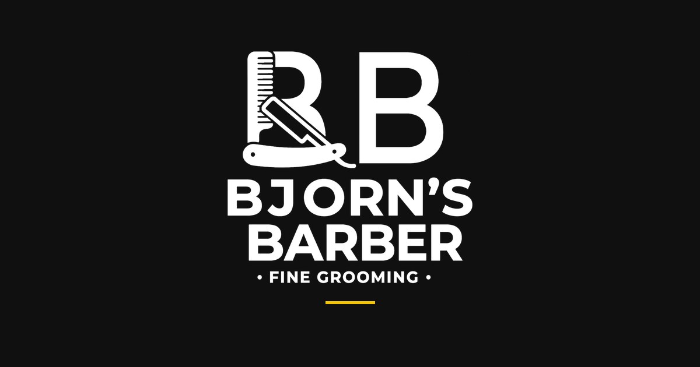
social/deel-afbeelding-1200x630.jpg